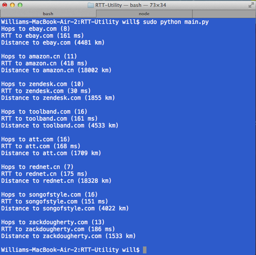

HOME
CODE
ABOUT
SKILLS
CONTACT
RTTraceroute
This was a little project I did for a networks class. It finds the RTT (Round-Trip delay Time), hop count, and geographical distance between your computer and other hosts on the internet.
It's open source.
